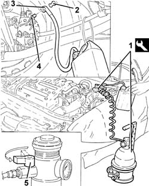

3330A14 HYDRAULIC BRAKING SYSTEM - Bleed air
- Path
- Procedures > 33 BRAKING SYSTEM > 3330 HYDRAULIC BRAKING SYSTEM > 3330A hydraulic brake system tests and checks > 3330A14 HYDRAULIC BRAKING SYSTEM - Bleed air
- Kind
- repair procedure (removal / refitting; the operation number is the code)
- Applies to
- all engines; all production periods
- Interactive page
- https://sloeber94.github.io/elrnDB-a147/en/#/3025217
Applies to: all engines; all production periods
Position the vehicle on the ramp.
1. Connect the tool to the brake-clutch fluid reservoir.
 | Name | Country |
|---|---|---|
1 | Brake/clutch bleeding equipment | 1.806.097.001 |
2. Remove the protective cap on the brake caliper bleed valve.
3. Connect the collection system (pipe and reservoir) to the bleed valve on the brake caliper.
4. Open the bleed valve on the brake caliper.
5. Slowly open the fluid reservoir tap.
Wait until all the air contained in the hydraulic system has emerged.
Close the bleed valve on the brake caliper and fit the protective cap.
Repeat the above operations for the other brake calipers.

Applies to: all engines; all production periods
Remove the collection system (pipe and reservoir).
Remove the equipment.
| Name | Country |
|---|---|---|
- | Brake/clutch bleeding equipment | 1.806.097.001 |
Remove the car from the ramp.
Topics that link to this page (26)
- E01 CLUTCH NOT RELEASING CORRECTLY
- F10 EXCESSIVE BRAKE PEDAL FREE PLAY
- 0010T65 hydraulic brake system bleed air
- 1820B20 (Pump) - MASTER CYLINDER R.R.
- 1820B46 RIGID supply PIPE from (pump) - master cylinder R.R .
- 1820B58 clutch hydraulic circuit vibration damper - r+r
- 3310A14 FRONT DISC BRAKES - R.R.
- 3310A30 FRONT BRAKE CALIPER (one) - R.R.
- 3310B14 REAR DISC BRAKES - R.R.
- 3310B36 rear brake calliper - r r
- 3330C10 (PUMP) - MASTER CYLINDER R.R.
- 3330C30 brake fluid reservoir - r + r and wash inside
- 3330C37 pipe from brake fluid reservoir to master cylinder (pump) - r r for rhd versions
- 3330D02 brake servo/brake pump assembly - r r
- 3330D11 brake servo - r r including seperation from master cylinder - facia lining removed for rhd version
- 3330E10 FLEXIBLE PIPE (one), left or right, to front brake calipers - R.R .
- 3330E30 FLEXIBLE PIPE (one), left or right, to rear brake calipers - R.R.
- 3340A12 A'B.S. system. - electronic and hydraulic CONTROL UNIT R.R.
- 3340A13 abs central mount - r r
- 3340B52 pump/central obs pipe - r r
- 3340B55 central brake pipe to lh - r r
- 3340B56 RIGID PIPE from hydraulic CONTROL UNIT to RIGHT FRONT BRAKE - R.R.
- 3340B62 rear connection central pipe - r r
- 3340B67 rh brake connection pipe - r r
- 3340B69 rhp brake connection pipe - r r
- 3350A30 asr to control unit - r r